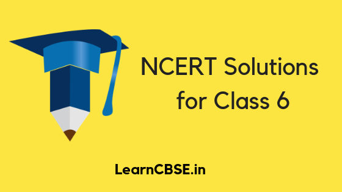

NCERT Solutions for Class 6 are solved by experts of LearnCBSE.in in order to help students to obtain excellent marks in their board examination. All the questions and answers that are present in the CBSE NCERT Books has been included in this page. We have provided all the Class 6 NCERT Solutions with a detailed explanation i.e., we have solved all the questions with step by step solutions in understandable language. So students having great knowledge over NCERT Solutions Class 6 can easily make a grade in their board exams. Read on to find out more about NCERT Solutions for Class 6 Maths, Class 6 Science, Class 6 Social Science Geography, History, Civics, Class 6 Honeysuckle Prose and Poetry, Class 6 English A Pact with the Sun, Class 6 English Reading, Class 6 English Writing, Class 6 English Grammar, Class 6 Hindi, Class 6 Hindi Unseen Passages, Class 6 Hindi Grammar, Class 6 Hindi लेखन कौशल, Class 6 Sanskrit.
NCERT Solutions for Class 6
Here we have provided Updated NCERT Solutions for Class 6 for 2020 Exams. NCERT Solutions clear your concepts to the core ensuring to stay with you in the long run. These are created by experts in accordance with the CBSE curriculum. You can find 100% accurate step-by-step solutions for every question in all the latest NCERT books. Practice with these daily to perform better in boards.
NCERT Solutions for Class 6 Maths
- Chapter 1 Knowing Our Numbers
- Chapter 2 Whole Numbers
- Chapter 3 Playing With Numbers
- Chapter 4 Basic Geometrical Ideas
- Chapter 5 Understanding Elementary Shape
- Chapter 6 Integers
- Chapter 7 Fractions
- Chapter 8 Decimals
- Chapter 9 Data Handling
- Chapter 10 Mensuration
- Chapter 11 Algebra
- Chapter 12 Ratio and Proportion
- Chapter 13 Symmetry
- Chapter 14 Practical Geometry
NCERT Solutions for Class 6 Science
- Chapter 1 Food Where Does It Come From
- Chapter 2 Components of Food
- Chapter 3 Fibre to Fabric
- Chapter 4 Sorting Materials Into Groups
- Chapter 5 Separation of Substances
- Chapter 6 Changes Around Us
- Chapter 7 Getting to Know Plants
- Chapter 8 Body Movements
- Chapter 9 The Living Organisms and Their Surroundings
- Chapter 10 Motion and Measurement of Distances
- Chapter 11 Light Shadows and Reflection
- Chapter 12 Electricity and Circuits
- Chapter 13 Fun with Magnets
- Chapter 14 Water
- Chapter 15 Air Around Us
- Chapter 16 Garbage In Garbage Out
NCERT Solutions for Class 6 Social Science Geography
- Chapter 1 The Earth in the Solar System
- Chapter 2 Globe Latitudes and Longitudes
- Chapter 3 Motions of the Earth
- Chapter 4 Maps
- Chapter 5 Major Domains of the Earth
- Chapter 6 Major Landforms of the Earth
- Chapter 7 Our Country India
- Chapter 8 India Climate Vegetation and Wildlife
NCERT Solutions for Class 6 Social Science – History
- Chapter 1 What, Where, How and When?
- Chapter 2 On The Trial of the Earliest People
- Chapter 3 From Gathering to Growing Food
- Chapter 4 In the Earliest Cities
- Chapter 5 What Books and Burials Tell Us
- Chapter 6 Kingdoms, Kings and an Early Republic
- Chapter 7 New Questions and Ideas
- Chapter 8 Ashoka, The Emperor Who Gave Up War
- Chapter 9 Vital Villages, Thriving Towns
- Chapter 10 Traders, Kings and Pilgrims
- Chapter 11 New Empires and Kingdoms
- Chapter 12 Buildings, Paintings, and Books
NCERT Solutions for Class 6 Social Science – Civics
- Chapter 1 Understanding Diversity
- Chapter 2 Diversity and Discrimination
- Chapter 3 What is Government
- Chapter 4 Key Elements of a Democratic Government
- Chapter 5 Panchayati raj
- Chapter 6 Rural Administration
- Chapter 7 Urban Administration
- Chapter 8 Rural Livelihoods
- Chapter 9 Urban Livelihoods
NCERT Solutions for Class 6 English Honeysuckle Prose
- Chapter 1 Who Did Patrick’s Homework
- Chapter 2 How the Dog Found Himself
- Chapter 3 Taros Reward
- Chapter 4 An Indian American Woman in Space
- Chapter 5 A Different Kind of School
- Chapter 6 Who I Am
- Chapter 7 Fair Play
- Chapter 8 A Game of Chance
- Chapter 9 Desert Animals
- Chapter 10 The Banyan Tree
NCERT Solutions for Class 6 English Honeysuckle Poetry
- A House, A Home
- The Kite
- The Quarrel
- Beauty
- Where Do All the Teachers Go?
- The Wonderful Words
- Vocation
- Whatif
NCERT Solutions for Class 6 English(Download PDF)
NCERT Solutions for Class 6 English – A Pact with the Sun
NCERT Solutions for Class 6 English A Pact With the Sun – Supplementary Reader
- Chapter 1 A Tale of Two Birds
- Chapter 2 The Friendly Mongoose
- Chapter 3 The Shepherd’s Treasure
- Chapter 4 The Old-Clock Shop
- Chapter 5 Tansen
- Chapter 6 The Monkey and the Crocodile
- Chapter 7 The Wonder Called Sleep
- Chapter 8 A Pact with the Sun
- Chapter 9 What Happened to the Reptiles
- Chapter 10 A Strange Wrestling march
CBSE Class 6 English Reading
CBSE Class 6 English Writing
- Message Writing
- Notice Writing
- Postcard Writing
- Telegram Writing
- Paragraph Writing
- Composition Based on Verbal Input
- Composition Based on Visual Input
- Letter Writing
- Application Writing
CBSE Class 6 English Grammar
- Articles
- Noun
- Pronouns and Possessive Adjectives
- Adjectives
- Agreement of Verb and Subject
- Preposition
- Verb
- Tenses
- Active and Passive Voice
- Reported Speech
- The Sentence
- The Parts of Speech
- Kinds of Noun
- Uses of Articles (A, An and The)
- Degrees of Comparison
- Modals
- Correct Use of Verbs
- Correct Uses of Prepositions
- Editing Task (Omissions)
- Editing Task (Error Correction)
- Rearrangement of Words (Jumbled Words)
- Word Power
NCERT Solutions for Class 6 Hindi
- Chapter 1 वह चिड़िया जो
- Chapter 2 बचपन
- Chapter 3 नादान दोस्त
- Chapter 4 चाँद से थोड़ी सी गप्पे
- Chapter 5 अक्षरों का महत्व
- Chapter 6 पार नज़र के
- Chapter 7 साथी हाथ बढ़ाना
- Chapter 8 ऐसे ऐसे
- Chapter 9 टिकट अलबम
- Chapter 10 झाँसी की रानी
- Chapter 11 जो देखकर भी नहीं देखते
- Chapter 12 संसार पुस्तक है
- Chapter 13 मैं सबसे छोटी होऊं
- Chapter 14 लोकगीत
- Chapter 15 नौकर
- Chapter 16 वन के मार्ग में
- Chapter 17 साँस-साँस में बाँस
NCERT Solutions for Class 6 Hindi Bal Ramkatha बाल रामकथा
CBSE Class 6 Hindi Unseen Passages अपठित बोध
CBSE Class 6 Hindi Grammar व्याकरण
- भाषा, लिपि और व्याकरण
- वर्ण-विचार
- शब्द-विचार
- संज्ञा
- संज्ञा के विकार
- वचन
- कारक
- सर्वनाम
- विशेषण
- क्रिया
- काल
- वाच्य
- अव्यय या अविकारी शब्द
- संधि
- समास
- उपसर्ग
- प्रत्यय
- वाक्य-विचार
- विराम-चिह्न
- अशुद्ध वाक्यों का संशोधन
- मुहावरे और लोकोक्तियाँ
- शब्द-भंडार
CBSE Class 6 Hindi लेखन कौशल
NCERT Solutions for Class 6 Sanskrit
- Class 6th Sanskrit Book Chapter 1 शब्द परिचयः 1
- 6th Class Sanskrit Book Chapter 2 शब्द परिचयः 2
- Sanskrit Solution Class 6 Chapter 3 शब्द परिचयः 3
- Class 6 Sanskrit NCERT Solutions Chapter 4 विद्यालयः
- NCERT Class 6 Sanskrit Solution Chapter 5 वृक्षाः
- Sanskrit Class 6 NCERT Solutions Chapter 6 समुद्रतटः
- NCERT Sanskrit Class 6 Chapter 7 बकस्य प्रतिकारः
- Sanskrit NCERT Class 6 Chapter 8 सूक्तिस्तबकः
- NCERT Solution Class 6th Sanskrit Chapter 9 क्रीडास्पर्धा
- NCERT Solutions Sanskrit Class 6 Chapter 10 कृषिकाः कर्मवीराः
- NCERT Sanskrit Solution Class 6 Chapter 11 पुष्पोत्सवः
- Sanskrit Ruchira Class 6 Chapter 12 दशमः त्वम असि
- Ruchira Bhag 1 Chapter 13 विमानयानं रचयाम
- Class 6 NCERT Sanskrit Solution Chapter 14 अहह आः च
- CBSE Class 6 Sanskrit Chapter 15 मातुलचन्द्र
- Chapter 1 – अकारान्त – पुल्लिङ्ग:
- Chapter 2 – आकारान्त – स्त्रीलिंग
- Chapter 3 – अकारान्त – नपुंसकलिंग
- Chapter 4 – क्रीडास्पर्धा
- Chapter 5 – वृक्षाः
- Chapter 6 संम्रुद्रतटः
- Chapter 7 बकस्य प्रतिकार
- Chapter 8 सूक्तिस्तवकः
- Chapter 9 अडगुलीयकं प्राप्तम्
- Chapter 10 कृषिकाः कर्मवीरः
- Chapter 11 पुष्पोत्सवः
- Chapter 12 दशमः त्वम् असि
- Chapter 13 लोकमड्गलम्
- Chapter 14 अहह आः च
- Chapter 15 मातुलचन्द्र
Class 6 NCERT Solutions All Subjects
- NCERT Solutions for Class 6 Maths
- NCERT Solutions for Class 6 Science
- NCERT Solutions for Class 6 Social Science
- NCERT Solutions for Class 6 English
- NCERT Solutions for Class 6 Hindi
- NCERT Solutions for Class 6 Sanskrit

Advantages of Solving NCERT Solutions for Class 6 from LearnCBSE.in
- All the Class 6 NCERT Textbook Solutions provided in this page are clear and concise in nature.
- NCERT Solutions for Class 6 Books are solved in easily understandable language to help students to grasp everything on the go.
- Accessible to everyone at any time anywhere without any difficulty.
- All the questions are solved strictly based on the NCERT (CBSE) Syllabus and Books. So mastering these solutions will definitely help students to score good marks in the examination.
- NCERT Solutions for Class VI given in this page are of free of cost.
CBSE class 6 study materials are provided for students in downloadable PDF format. These materials are free and students can access them as per their requirement. LearnCBSE provides here NCERT solutions, revision notes, syllabus, important questions, sample papers and previous year question papers for students of 6th standard, so that they can prepare for exams thoroughly and score good marks in the final examinations. All these materials are designed keeping into consideration the syllabus as per the NCERT curriculum by our subject experts and teachers.
Class 6 is the next level for students after they have crossed their primary schooling. The solutions provided by us covers all the subjects chapters-wise and exercise-wise, so that students can get the best answers for all the questions here. Also, they can prepare for the exam by solving the question papers and sample papers to understand the paper pattern and weightage of each chapter, subject-wise. Important questions covers all the important topics which will be asked necessarily in the final exam. To have a quick revision, students can prefer to our notes where each topic is described briefly. Below are the links given for each subject material. Click on the links and prepare well.
We hope the NCERT Solutions for Class 6 provided in this page helps in your board exam preparation.